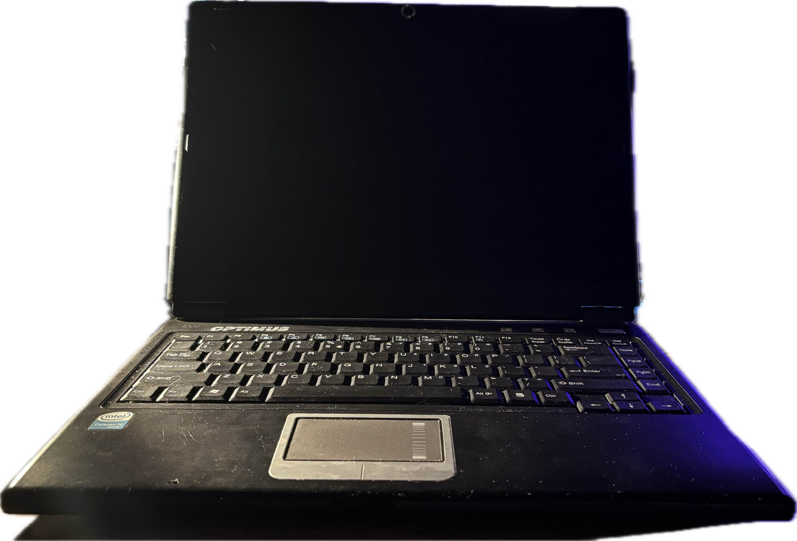
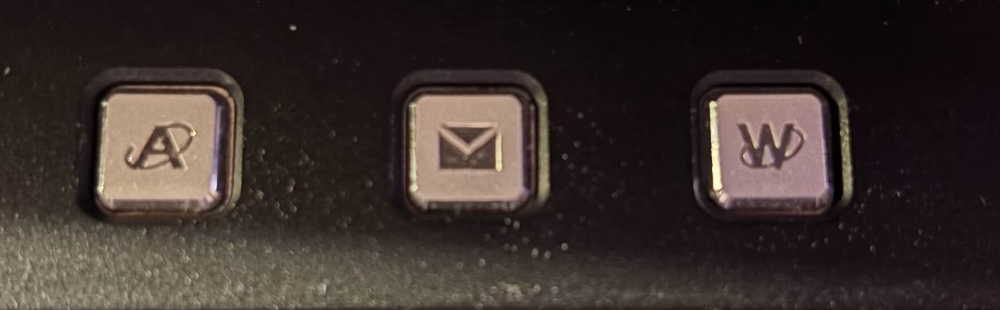
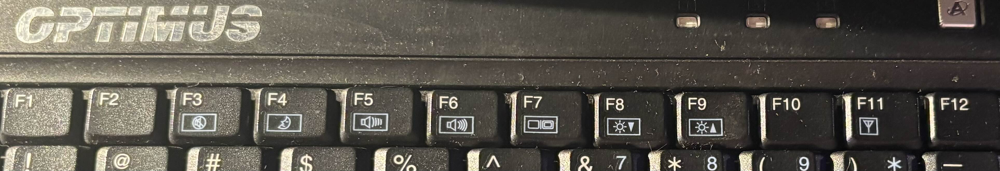

Name : Optimus S.A. Smart M200W+ Smart MDC1400 / Clevo M54V
CPU : Intel Celeron M 1.4Ghz
GPU : Dont Know
RAM : 128Mb
CD/DVD : yes
FDD : no
Dial-Up : yes
Ethernet : yes
Wifi : yes
Functional Battery : yes
Additional Buttons : yes
Additional Buttons List : A??, Mail, W??? (also has wifi switch on the side)
Function Buttons : yes
Function Buttons List : F3 - Mute, F4 - Sleep, F5- Volume Down, F6 - Volume Up, F7 - Video Output Change, F8 - Brightness Down, F9 - Brightness Up, F11 - ???
  